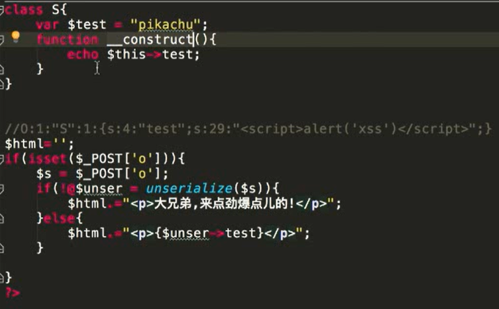

php反序列化
- 序列化serialize()
把一个对象变成可以传输的字符串
class S{
public $test="pikachu";
}
$s=new S(); //创建一个对象
serialize($s); //把这个对象进行序列化
序列化后得到的结果是这个样子的:O:1:"S":1:{s:4:"test";s:7:"pikachu";}
O:代表object
1:代表对象名字长度为一个字符
S:对象的名称
1:代表对象里面有一个变量
s:数据类型
4:变量名称的长度
test:变量名称
s:数据类型
7:变量值的长度
pikachu:变量值- 反序列化unserialize()
把被序列化的字符串还原为对象,然后在接下来的代码中继续使用
$u=unserialize("O:1:"S":1:{s:4:"test";s:7:"pikachu";}");
echo $u->test; //得到的结果为pikachu序列化和反序列化本身没有问题,但是如果反序列化的内容是用户可以控制的,且后台不正当的使用了PHP中的魔法函数,就会导致安全问题
常见的几个魔法函数:
__construct()当一个对象创建时被调用
__destruct()当一个对象销毁时被调用
__toString()当一个对象被当作一个字符串使用
__sleep() 在对象在被序列化之前运行
__wakeup将在序列化之后立即被调用
漏洞举例:
class S{
var $test = "pikachu";
function __destruct(){
echo $this->test;
}
}
$s = $_GET['test'];
@$unser = unserialize($a);
payload:O:1:"S":1:{s:4:"test";s:29:"<script>alert('xss')</script>";}提交一个序列化好的内容（恶意的JavaScript）
